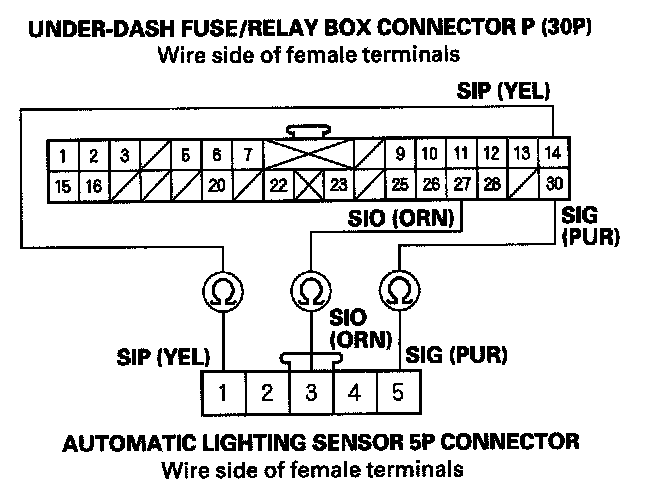
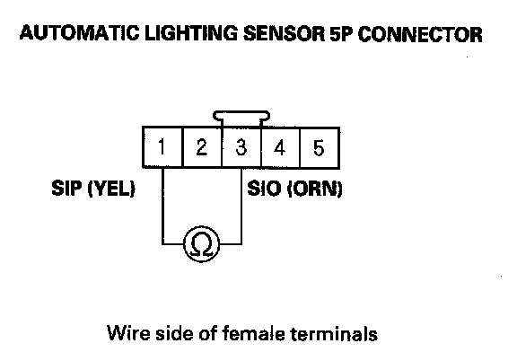
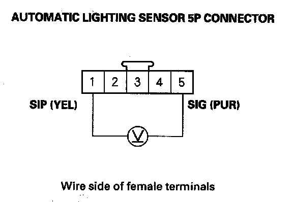

B1575
DTC B1575: Automatic Lighting Sensor Circuit MalfunctionNOTE: If you are troubleshooting multiple DTCs, be sure to follow the instructions in B-CAN System Diagnosis Test Mode A.
1. Clear the DTCs with the HDS.
2. Turn the ignition switch OFF, and then back ON (II).
3. Check for DTCs with the HDS.
Is DTC B1575 indicated?
YES - Go to step 4.
NO - Intermittent failure, the system is OK at this time. Check for loose or poor connections between the automatic lighting sensor and the MICU.
4. Turn the ignition switch OFF.
5. Disconnect the under-dash fuse/relay box connector P (30P).
6. Disconnect the automatic lighting sensor 5P connector.
7. Disconnect the gauge control module connector A (12P).

8. Check for continuity between the under-dash fuse/relay box connector P (30P) No. 14, No. 27, and No. 30 terminals and the automatic lighting sensor 5P connector No. 1, No. 3 and No. 5 terminals respectively.
Is there continuity?
YES - Go to step 9.
NO - Repair open in the wire.

9. Check for continuity between the automatic lighting sensor 5P connector No. 1 and No. 3 terminals.
Is there continuity?
YES - Repair short in the wire between the No. 1 and No. 3 terminals.
NO - Go to step 10.
10. Reconnect the under-dash fuse/relay box connector P (30 P).
11. Turn the ignition switch ON (II).

12. Measure the voltage between the automatic lighting sensor 5P connector No. 1 and No. 5 terminals.
Is there about 5 V?
YES - Replace the automatic lighting sensor.
NO - Replace the under-dash fuse/relay box.